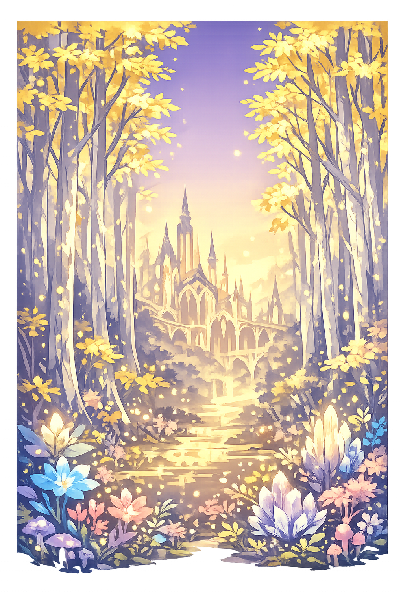

The Authentic Orthography
Realm of the Light Elves · Freyr's Inheritance · The Shining World

Why álfheimr.com preserves the true form
Álfheimr
The name in its original Old Norse form — a compound of álfr ("elf") and heimr ("home, world, realm"). The acute accent on the initial Á marks the stressed first syllable, carrying the full phonetic weight of the word. In the Norse cosmos, — is one of the Nine Worlds, given to the Vanir god Freyr as a tooth-gift. It is a place of perpetual light, beauty, and joy — the home of the Ljósálfar, the light elves, beings so fair and luminous that they shine like the sun itself.
alfheimr
Reduced to eight Latin letters. The acute accent is lost — and with it, the stress pattern that distinguishes Álfheimr from a flat, anglicized pronunciation. The name becomes just another fantasy term, stripped of its grammatical case ending -r in many popular uses, its Norse identity erased. What was once a specific realm in a detailed cosmology becomes a generic label for anything vaguely elven. The orthography matters. The accent matters. Without it, the word is merely sound. With it, the word is language.
Álfheimr
The acute accent on Á (U+00C1) restores the stress placement of the original Old Norse. This is not decoration — it is philological accuracy. In Old Norse, stress fell on the first syllable, and the acute accent in modern normalized orthography marks this clearly. The domain encodes to Punycode, but the browser displays the truth. The light elves deserve a name that shines as brightly as they do.
álfheimr.com → xn--lfheimr-gwa.com
The non-ASCII character Á (U+00C1) is encoded while the ASCII remains visible. To the DNS, it is Punycode. To the Eddas, it is Álfheimr.
Where álfheimr stands in the PUNYCODEX elegant tier system
Álfheimr is Tier 2 under the PUNYCODEX system. The restoration preserves one principal feature of the original orthography without claiming the full dual-mark status of Tier 1.
This is not a deficiency. Tier 2 names are still authoritative restorations — they simply reflect the limits of what the domain system, the keyboard, or the manuscript record can practically encode. The name remains true to source within those limits.
How the realm of the elves was truly spoken
One of the Nine Worlds, given to Freyr
Álfheimr is one of the Nine Worlds of Norse cosmology — a realm of unending light, beauty, and joy. According to the Grímnismál of the Poetic Edda, the god Freyr received — as a tooth-gift — a present given to an infant when they cut their first tooth. This establishes — as divine property, intimately connected to the Vanir gods of fertility, prosperity, and natural abundance. The light elves who dwell there are described as fairer than the sun to look upon, luminous beings who exist in a state of perpetual grace.
The Ljósálfar are beings of radiant beauty, "fairer than the sun to look at." They dwell in halls of gold and crystal, and their nature is associated with light, healing, and auspicious influence. Unlike the dark elves (dökkálfar) or dwarves (svartálfar), the light elves are benevolent and divine.
In Grímnismál 5, Óðinn states: "Álfheim Frey gáfu í árdaga tannféi." "Álfheim they gave to Frey in days of yore as a tooth-gift." This connects the realm to the Vanir god of fertility, sunshine, and rain — explaining why — is a place of abundance and growth.
Álfheimr is connected to the other eight worlds through Yggdrasil, the world tree. While the exact placement varies in sources, the realm is understood to exist in the upper branches or canopy of the cosmic ash — close to the heavens, close to the light, far from the darkness of Niðavellir or Helheimr.
Where — holds the light elves, Svartálfaheimr holds the dark elves or dwarves — master smiths who forge the gods' greatest treasures. The contrast is cosmic: light above, dark below; open air above, caves below; beauty above, craftsmanship below. Both are necessary. Neither is evil.
Stories of Freyr, the light elves, and the gift of a world
In the Grímnismál, Óðinn in disguise reveals cosmological secrets to the human king Geirröðr. Among these revelations is the fact that — was given to Freyr as a tannfé — a tooth-gift. In Old Norse culture, a tooth-gift was presented to a child when their first tooth emerged, marking their entrance into the community and their claim to inheritance. By giving Freyr an entire realm as a tooth-gift, the gods established him as a sovereign of equal standing. This is not a minor detail — it is a declaration of divine legitimacy. Freyr does not merely visit —. He owns it. The light elves are his people, and the realm prospers under his protection.
The Grímnismál provides one of our most detailed catalogs of the Norse cosmos. In it, Óðinn lists the dwellings of the gods and other beings, moving from the highest heavens to the deepest underworld. Álfheimr appears early in this catalog — placed among the upper, luminous realms. The poem describes the light elves as living in a state of perpetual grace and beauty. They are not dead, nor are they gods. They occupy a middle space — closer to the divine than humans, but still part of the created order, still subject to the fate that awaits all beings at Ragnarok. Their light is a gift, not an inherent immortality.
The connection between — and Freyr ties the light elves to the Vanir — the Norse gods of fertility, prosperity, and natural forces. After the war between the Æsir and the Vanir, Freyr and his sister Freyja were sent to Ásgarðr as hostages, but Freyr retained his sovereignty over —. This dual identity — Vanir god and elven king — makes Freyr a bridge between different orders of being. The elves themselves are sometimes described as having Vanir-like powers: they can heal, they can bless, they can influence the fertility of the land. In some sources, the boundary between "elf" and "Vanir" is deliberately blurred, suggesting that the categories were fluid in Norse thought.
In the Prose Edda, Snorri Sturluson distinguishes between the Ljósálfar (light elves) and the Dökkálfar (dark elves) or Svartálfar (black elves, essentially dwarves). The light elves are "fairer than the sun to look at," dwelling in Álfheimr, while the dark elves dwell deep in the earth and are "blacker than pitch." This is not a moral distinction — it is a cosmological one. Light and darkness are both necessary. The sun needs the earth. The sky needs the cave. The light elves represent the upper, open, radiant aspect of the Norse universe; the dark elves represent the lower, hidden, crafted aspect. Together, they make the cosmos whole.
Álfheimr is not merely a name. It is a coordinate in the Norse cosmos — a realm of light set against the darkness of Helheimr, of beauty set against the chaos of Jotunheimr. To understand Álfheimr is to understand how the Norse imagined the structure of reality itself: not as a single plane, but as a branching tree, with worlds of fire and ice, gods and giants, light elves and dark elves, all bound together by Yggdrasil.
This is not a directory. This is a resurrection.
Enter the LexiconSee how — behaves in the PUNYCODEX Type Tool — with predictive autocomplete, character-by-character breakdown, and scholarly constraint validation.
alfheimr
→
Álfheimr
Attested spellings and scholarly forms